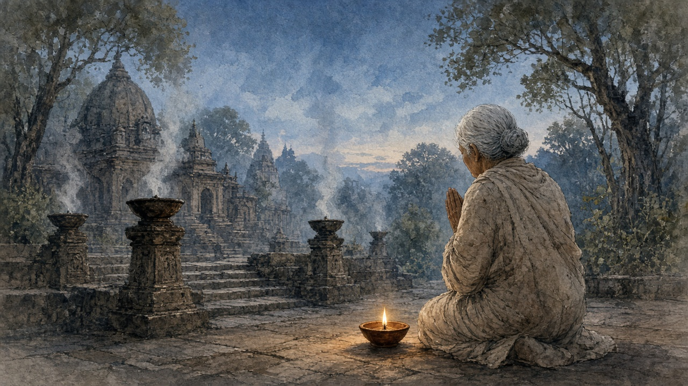

第20回貧女の一灯（ひんにょのいっとう）― 心をこめた小さな明かり
配信日
🔊 読み上げで聴く
出典『阿闍世王授決経』（西晋・法炬訳）／『妙法蓮華経』方便品第二

昔、阿闍世王（あじゃせおう）がお釈迦さまをお迎えして、王宮の門から祇園精舎まで、百斛（ひゃっこく）もの油でたくさんの灯明をともしました。それを見た一人の貧しい老女は、自分も仏さまに灯をささげたいと願い、物乞いをして得たわずか二銭で油を買います。油屋は「それで食べ物を買いなさい」と言いましたが、老女は「仏さまにお会いできるのは百劫に一度。貧しくても、一つの灯をともしたいのです」と答えました。心を打たれた油屋は、油を多めに分けてくれました。
老女の油は夜半までももたない量でしたが、その灯は夜どおし消えず、朝になって目連尊者（もくれんそんじゃ）が消そうとしても、かえって明るさを増したと説かれます。お釈迦さまは、老女が遠い未来に仏となることを約束されました。王が不思議に思ってたずねると、名医の耆婆（ぎば）はこう答えます。
「王所作雖多 心不専一 不如此母注心於仏也」（王の作すところ多しといえども、心専一ならず。此の母の心を仏に注ぐに如かざるなり） 出典 『阿闍世王授決経』
大切なのは量や見た目ではなく、どれだけ心をこめたかだというのです。法華経にも、小さな行いを尊ぶ言葉があります。
「乃至童子戯 聚沙為仏塔 如是諸人等 皆已成仏道」（乃至童子の戯れに、沙を聚めて仏塔を為る、是の如き諸人等、皆已に仏道を成じき） 出典 『妙法蓮華経』方便品第二
子どもが遊びで砂を集めて塔をかたどることさえ、仏の道につながっていく。わたしたちが唱える一遍のお題目も、日々の小さな親切も、心をこめれば消えない灯になります。たくさんできない日があっても大丈夫です。一つを、ていねいに。